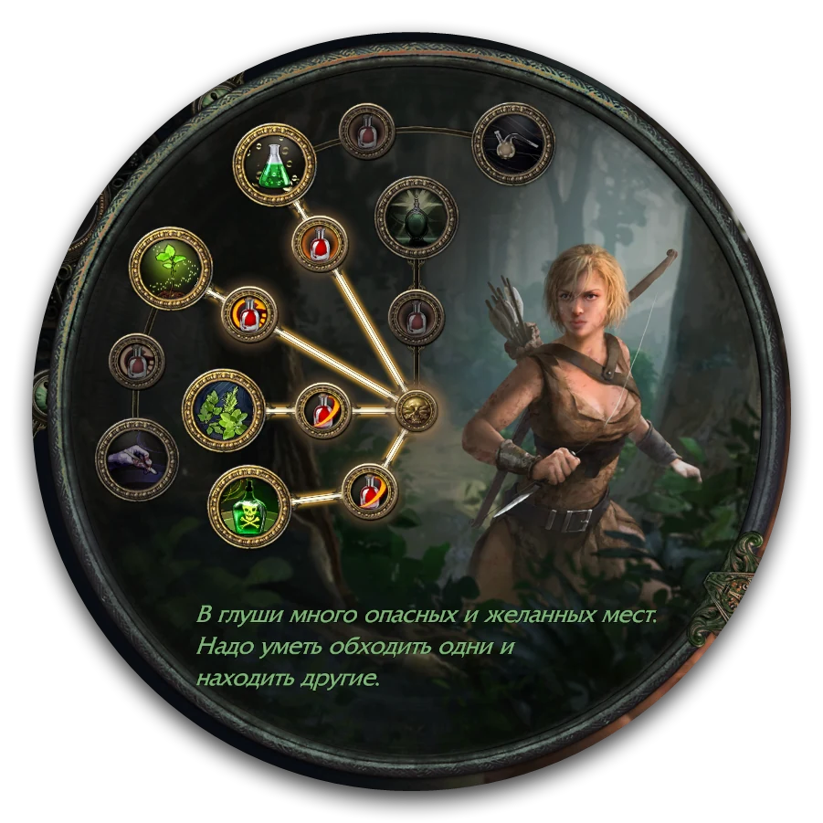

О билде
Отскакивающая ядовитая смесь на Следопыте (Pathfinder) уже несколько лет остаётся одним из самых сильных, простых и стабильных стартеров. Билд максимально эффективен в бюджете до 30 диванов, а дальше растёт со скрипом. Подходит новичкам: собрать его неправильно очень сложно.
Основной камень
| Камень | Где взять | Как бьёт |
|---|---|---|
| Ядовитая смесь (Poisonous Concoction) | У торговца с 12 лвл | Летит и взрывается в конце полёта |
| Отскакивающая ядовитая смесь (Poisonous Concoction of Bouncing) | Только в конце лабиринта, случайный шанс. Проще купить на картах за 30-40 хаосов | Один снаряд отскакивает от земли и взрывается на каждом отскоке |
В билде мы будем использовать 2 вариации камней, обычную (на старте) с переходом на отскакивающую.
Ядовитая смесь
Её используем в начале лиги, чтобы пройти акты и нафармить на стартовый шмот, она отлично справляется на ранних этапах.
Главное для неё: количество снарядов. Чем больше снарядов попадёт в босса за один бросок, тем больше урона. По маленьким боссам всеми снарядами не попасть, и часть урона теряется.
Её хватает примерно до жёлтых карт, потом покупается Отскакивающая ядовитая смесь.
Отскакивающая ядовитая смесь
Наш основной камень в билде. Его главное преимущество в том, что доп снаряды и удары цепи (chain) превращаются в доп отскоки. Если цель одна, все отскоки летят в неё, и урон не теряется: 10 отскоков дают 10 стаков яда, 20 отскоков 20 стаков яда.
Минус: она тратит больше зарядов флакона, поэтому флаконы на хп становятся ещё важнее.
Плюсы и минусы
| Плюсы | Минусы |
|---|---|
| Очень высокий урон за свой бюджет | Зачистка ниже среднего, особенно без Азенат |
| Простая сборка, подходит новичкам | Нет нормального лечения флаконом: флаконы на хп уходят в урон (хотя за счёт похищения это и не нужно) |
| Нормальная выживаемость, хотя ваншоты иногда прилетают | В большом бюджете лучше перейти на другой билд |
| Оружие не нужно, урон берётся из флакона на хп | Билд много лет в топе стартеров и многим надоел |
Главные правила
- Урон Ядовитой смеси зависит только от того, сколько восстанавливает ваш флакон на хп.
- Оружия в руках быть не должно: скилл работает только с пустыми руками. В левую руку можно взять щит.
- Отключите автоэкипировку в настройках игры. Иначе персонаж будет брать в руки подобранное оружие, и скилл перестанет работать.
Связки камней, вещи и флаконы на каждый этап лежат на вкладках , и . Этап переключается кнопками сверху: Лвлинг, Начало карт, Красные карты, Эндгейм билд.
Лвлинг
На актах Ядовитая смесь очень сильная, проблем с боссами не будет. Задача лвлинга: как можно быстрее пройти акты. Связки камней на каждый момент: .
Класс
Охотница (Ranger). Из неё потом делается Следопыт, а ещё у неё есть Импульс (Momentum), он нужен для передвижения всех актов.
Главное на актах: флакон на хп
Урон зависит от флакона на хп, поэтому все акты постоянно меняйте его на более сильный: проверяйте торговцев при каждом заходе в город и смотрите дроп. Набор флаконов на актах: .
Акт 1
Ядовитую смесь мы получаем только в конце 1 акта на 12 уровне, так что до неё надо дожить, и у нас есть 2 варианта:
| Вариант | Плюсы | Минусы |
|---|---|---|
| Едкая стрела (Caustic Arrow) | Удобный, нужен лук, который у вас есть со старта | Урона по боссам и рарникам почти нет |
| Призрачный бросок (Spectral Throw) | Много урона по боссам | Нужно оружие ближнего боя, неудобный в использовании |
Фишки Призрачного броска
- Оружие лучше двуручное: топор, если его нет, двуручный меч или дубина.
- Больше всего урона бросок наносит, когда крутится на месте в конце полёта. Вставайте так, чтобы босс оказался ровно в конце полёта.
- Чтобы босс не бежал к вам, ставьте Тотем-приманку (Decoy Totem). Босс агрится на тотем, а вы отходите и бьёте кончиком броска. Тотем продаёт Несса после квеста «Разорение гнёзд», с 4 лвл.
4 лвл: ртутный флакон
Обязательно сделайте квест «Любовь к ближнему». Награда: ртутный флакон на скорость бега.
12 лвл: получаем Ядовитую смесь
Камень можно взять до Мервейл (так бой проще) или после. Сразу после этого:
- Снимаем оружие, в левую руку берём щит.
- Отключаем автоэкипировку.
- Собираем связки на урон и на передвижение с Ударом щитом ().
Акт 2
В этом акте у нас открывается возможность получить 100% шанс отравить за счёт камня Шанс отравить (Chance to Poison) и Вестника агонии (Herald of Agony), который мы получаем после квеста «Захватчики в чёрном».
Дальше по акту, после квеста «Корень бед», покупаем у Йины камень Вестник пепла (Herald of Ash). Он взрывает мобов после их смерти, за счёт чего сильно бустит зачистку в первые 5-6 актов (потом его заменяем).
Бандиты
Помогаем Алире: она даёт +15% ко всем резистам, а нам в будущем может быть сложно собрать резисты.
Акт 3
В середине акта открываются ауры. Берём Спасение от стихий (Purity of Elements) в приоритете. Но если получилось собрать по 50+ всех резистов без Спасения от стихий, то берём Грацию (Grace), с ней будет больше уклонения.
Урона на актах будет хватать с головой, так что не стоит брать ауру на урон.
Ещё в 3 акте у нас появляется возможность попасть в лабиринт. Идём туда, как только сможем, потому что для нас это больше чем х2 урон, а также возможность получить стартовую валюту или вообще нужный нам камень Отскакивающей ядовитой смеси (раздел «Лабиринты»).
Акт 4
В 4 акте мы получаем ещё один сильный поверспайк: с 38 лвл меняем Залп и Дополнительные снаряды на улучшенные версии, Большой залп (Greater Volley) и Много дополнительных снарядов (Greater Multiple Projectiles). Ядовитая смесь (Poisonous Concoction) и Отскакивающая ядовитая смесь (Poisonous Concoction of Bouncing) невероятно скейлятся с любых доп снарядов. (Обязательно до 4 акта сохраните 1 алхимку, чтобы один камень купить, а второй взять в награду за квест.)
Если вам повезло выбить 5 линк, то пятым камнем добавляем Безграничные состояния (Unbound Ailments).
Дальше до конца актов камни не меняются.
Акты 5-10: вещи
С этого момента смотрим, какие рарки падают: уклонение, резисты и скорость на ботинках. Что искать в каждом слоте: .
Точность (Precision) на актах не берём, главное взять меткость в дереве:
Акты 5-10: скорость прохождения
Убивайте только синих и жёлтых мобов, белых пропускайте. В большую пачку белых можно бросить Ядовитую смесь, но бить каждого моба не нужно: за все акты это экономит минимум час.
Что покупать на актах
Ничего, кроме камней и флаконов у торговцев: валюта нужна на картах. Исключение: амулет или кольцо, если совсем плохо со статами или резистами.
Лабиринты
В лабы идём сразу, как только они доступны: в конце каждой есть шанс получить Отскакивающую ядовитую смесь. Урона хватает с запасом, ловушки не проблема.
Подготовка
Купите в первом акте 3-4 запасных камня Ядовитой смеси и положите в сундук. Так в конце лабы будет что менять, не вынимая камни из билда.
Порядок восхождений

| Лаба | Восхождение | Что даёт |
|---|---|---|
| 1 | Возмездие природы (Nature's Reprisal) | Стаки Истощения (Withered) без качества камня и их усиление. Примерно 135% мор урона, одно из самых сильных восхождений на урон в игре |
| 2 | Природный адреналин (Nature's Adrenaline) | Флаконы пополняются сами. Важно, потому что скилл тратит заряды флакона |
| 3 | Мастер по токсинам (Master Toxicist) | Под действием любого флакона: пролиферация яда на соседей и 20% шанс, что яд нанесёт на 100% больше урона. На актах работает редко, полноценно с выхода на карты |
| 4 | Дар природы (Nature's Boon) | +30% к эффекту особых флаконов. Сначала это броня, потом уклонение + макс резы. Не билдообразующее |
Выход на карты
Два обязательных условия
- Закрыть все резисты. Недостающие резы можно докрафтить в станке, если на вещах есть свободные суффиксы.
- Скрафтить нормальные флаконы на хп ().
Пантеон
- Душа Морского царя (Soul of the Brine King): улучшаем до иммунитета к заморозке.
- Душа Аберата (Soul of Abberath): улучшаем до иммунитета к горящей земле.
Стартовый сетап
Если на актах набралась валюта, на выходе в карты стоит собрать три дешёвых уника. Всё вместе стоит 20-30 хаосов и даёт 20 000+ брони под гранитным флаконом.
- Табула Раса (Tabula Rasa)
- Протекция Просперо (Prospero's Protection)
- Рассветный прорыв (Dawnbreaker)
Вещи по слотам: . Флаконы: .
Табула Раса
Белый 6-линк без брони, уклонения и статов, поэтому стоит почти ничего. Работает с Мастерством здоровья в дереве: +15% к максимуму здоровья, если на нагруднике нет свойств здоровья.
Протекция Просперо
Удваивает броню со щита, но убирает всю броню с нагрудника. У Табулы брони нет, так что мы ничего не теряем.
Щит
Нужен щит на 2000+ брони. Самый дешёвый вариант: Рассветный прорыв, уже через несколько часов лиги стоит 2-3 хаоса. Ему нужно 67 лвл, до этого берём любой жёлтый щит с максимумом брони за 1 хаос.
Сила для Рассветного прорыва
Щиту нужно 159 силы:
- повторите стартовое дерево 1 в 1;
- немного силы даёт Протекция Просперо;
- докупите пояс на 30+ силы (база пояса сама даёт до 35 силы, стоит копейки) или возьмите т2-т3 силу в другом слоте.
Порядок покупки
- Хорошие флаконы на хп.
- Протекция Просперо и щит.
- Табула Раса.
Щит с кольцом защищают вплоть до красных карт, а урона хватает даже в 4-линке.
Вторые грейды
Порядок покупок после выхода на карты. Связки камней на этот этап: . Вещи по слотам: .
Камни можно увидеть в .
1. Отскакивающая ядовитая смесь
Первая серьёзная покупка, сильный прирост урона по одной цели и зачистки. Берём сразу после уников из стартового сетапа.
2. Мастерство снарядов
Сразу после Отскакивающей ядовитой смеси берём в дереве Мастерство снарядов: снаряды наносят на 20% больше урона за каждый удар по цепи. При 13 отскоках последний удар получает +260%, в среднем это около +130% инкриса с одного поинта.
3. Вентиль гнева (Fury Valve)
Амулет на +2 отскока. Без Отскакивающей ядовитой смеси не брать: на обычной Ядовитой смеси он ломает билд. В первый день лиги может стоить 20+ хаосов, со второго дня обычно около 1 хаоса.
4. Дендрогнев (Dendrobate), 5-линк
Даёт больше урона, чем 6-линк Табула, при 300 ловкости и 150 интеллекта. В 5-линке с ним спокойно бегаются т16 карты.
Сразу после того, как надели Дендрогнев, переделайте дерево: шанс отравления теперь есть на нагруднике. Поинты на шанс отравить скидываем и берём вместо них damage over time в двух местах дерева (отмечены красным на картинке ниже).
Статы для нагрудника собираем с амулета, дерева и рарок: шлем, пояс, ботинки и одно жёлтое кольцо (резисты и недостающие статы).
5. Мягкое касание Азенат (Asenath's Gentle Touch)
Перчатки сильно улучшают зачистку: проклятые враги рядом с трупами взрываются. Дают немного интеллекта для Дендрогнева. В первый день лиги стоят 100+ хаосов, но за 2-3 дня сильно дешевеют, торопиться не стоит.
6. Подаяние парии (Leper's Alms), по желанию
Щит на урон за счёт длительности состояний: яд дольше висит на враге. Нужен только для боссинга (ранние тарелки Элдера или Шейпера). Для обычного маппинга щит на броню с Просперо лучше в 99% случаев.
С этим щитом Просперо становится бесполезным, и кольцо меняем на Метку покорности (Mark of Submission) с Отчаянием (Despair). Это ещё около 30% мор урона. Азенат тоже вешают проклятие, поэтому в дереве нужно взять второе проклятие.
Минус: билд становится стеклопушкой. Брони больше нет, гранитный флакон почти бесполезен, ваншоты прилетают чаще. Вариант для тех, кто уверен в своих руках.
Возможности билда на этом этапе
В 5-линке билд бегает т16 карты, убивает гвардов Шейпера, Шейпера и Убер Элдера (с несколькими смертями). Квестовые боссы проходятся легко.
Красные карты
Связки камней на этот этап: .
Камни можно увидеть в .
6-линк Дендрогнев
Открывает Мейвен, почти любых пинакл боссов без особых проблем и не самые сложные тарелки. На старте лиги стоит около 3-4 диванов, это 1-2 часа фарма красных карт.
Greater Chain
Берём вместе с 6-линком: +50% мор к количеству цепей. Это больше отскоков, больше яда и сильнее работает Мастерство снарядов. В прошлой лиге на старте камень стоил пару десятков хаосов. Если цена сильно выше, его можно отложить.
Намазка на амулет: Deflection
Масла Amber, Indigo и Silver. Silver в первые дни лиги дорогое. Deflection даёт +8% к шансу блока и заряды выносливости (физ и стихийное снижение урона).
Дальше два пути
- Оставить билд как есть, фармить до 30-40 диванов и перейти на другой билд.
- Купить Укол предательства, чтобы быстрее фармить и выйти в карты кошмаров (следующий раздел).
Билд не подходит для фарма Легиона и Бричей.
Укол предательства
Что даёт
Укол предательства (Betrayal's Sting) даёт шанс при отравлении наложить ещё один яд. Для пойзон билдов это прямой мор урон: сколько процентов на кольце, столько процентов урона. Базово до 40%, с Ядовитыми катализаторами до 48%. Билд бьёт одну цель много раз, поэтому шанс срабатывает постоянно.
Минус
Кольцо снимает от 20 до 30% всех резистов. Оно встаёт вместо жёлтого кольца, и резисты нужно пересобрать флаконами.
Резисты флаконами
Есть два варианта: дешёвый с висмутовым флаконом (+35% ко всем стихийным резистам) и получше с двумя флаконами на резисты (рубиновый + сапфировый или топазовый). Хаос рез во втором варианте закрывает сам Укол предательства. Наборы и требования к флаконам: .
Рекомендация
Лучше оставить Рассветный прорыв, Просперо и гранитный флакон, а Укол предательства поставить вместо жёлтого кольца. Если ушли в стеклопушку с Подаянием парии, гранитный флакон не нужен: на его место аметистовый, ртутный или флакон на боевой раж ради урона.
Что может этот сетап
- Любые пинакл боссы с первого портала.
- Не самые замазанные карты кошмаров.
- Довольно замазанные т16 карты.
- Почти любые тарелки (Feared не проверялся).
Эндгейм версия
Стоит до 20-30 диванов. Убивает уберов (Убер Шейпер с первого портала, вся убер цепочка Игона) и бегает карты кошмаров даже с неприятными модами. Ваншоты иногда прилетают.
Связки камней: . Вещи по слотам: . Флаконы: .
Камни можно увидеть в .
Уники
- Восторг Олесии (Olesya's Delight)
- Нетерпение Ралакеша (Ralakesh's Impatience)
- Укус змеи (Snakebite)
- Запретная плоть (Forbidden Flesh)
- Запретное пламя (Forbidden Flame)
- Укол предательства (Betrayal's Sting), 2 штуки
Что меняется
| Слот | Было | Стало | Почему |
|---|---|---|---|
| Кольца | Просперо + Укол предательства | 2 Укола предательства | Очень много урона |
| Щит | Рассветный прорыв | Жёлтый щит: максимум блока, минимум 15% блока чар, по возможности подавление чар (или резисты) | Нужен блок атак и чар |
| Перчатки | Азенат | Укус змеи | Урон, зачистка немного проседает |
| Намазка на амулет | Deflection | Предосторожность (Safeguard) | Deflection теперь берётся в дереве |
| Флаконы | 2 на хп + резисты + гранитный | 1 на хп, 3 на резисты, нефритовый | Минус резы с двух колец вещами не закрыть |
| Аура | Вестник агонии | Злорадство (Malevolence) | Шанс отравления закрыт, вестник давал около 10% мор урона |
Если резы совсем не закрываются, можно оставить один Укол предательства, а второй докупить позже.
Уклонение или броня
- Iron Reflexes: уклонение переводится в броню. Стабильнее на картах, но бьют чаще.
- Без него: около 40 000 уклонения. Попадают редко, но если попали, это скорее всего ваншот. Вместе с блоком по вам попадают очень редко, а со щитом Свалин (Svalinn) ещё реже.
Откуда урон
Восторг Олесии превращает заряды ярости в заряды подавления (Affliction). Каждый даёт 8% мор урона от состояний (яд это состояние). Всего 9 зарядов, это 72% мор урона:
- дерево;
- сам пояс: +1;
- Укус змеи: +1;
- Запретная плоть и Запретное пламя: восхождение Avidity.
Укус змеи даёт бонусы за каждый заряд ярости, но пояс их забирает. Нетерпение Ралакеша решает это: с ним считается, что у вас максимум зарядов ярости. В итоге работают и заряды с пояса, и бонусы ярости с перчаток: ещё 45% damage over time.
Важно про порядок покупки
Пояс, перчатки и ботинки работают только вместе, по отдельности они ничего не дают. Менять их нужно одновременно.
Нетерпение Ралакеша бывает трёх вариантов (выносливость, сила, ярость), нужны только на ярость. Они могут стоить около 15 диванов, половину бюджета. Пока не накопили на них, не начинайте пересборку и бегайте на прошлой версии.
Заряды в бою: Метка браконьера
Avidity даёт заряды только при движении, а во время атаки вы не двигаетесь. Удар щитом не считается ходьбой. Поэтому ставим Метку браконьера (Poacher's Mark) через Метку при попадании (Mark On Hit Support).
Метка даёт шанс получить заряд ярости при ударе, он сразу становится зарядом подавления. Шанс зависит от качества: 20% качества дают 5%. В зелёном сокете подходящий цвет даёт ещё +10% качества, итого 30% и 7%.
За один бросок 21 цепь, то есть минимум 21 удар, поэтому заряды приходят постоянно. Ещё метка даёт здоровье за каждый удар, это сильный реген.
Самоцветы
В порядке важности.
1. Средний кластер с Последствиями (Follow-Through)
До 20% инкриса за каждый оставшийся отскок, максимум 100%. При 21 цепи почти всегда 100%. Мастерство снарядов усиливает последние отскоки, этот нод первые. Работает только один такой кластер, больше не покупать.
2. Невозможный побег (Impossible Escape) на Perfect Agony
Сам кейстоун не берём. Самоцвет даёт взять поинты вокруг него без пути через дерево, экономит 8 поинтов.
3. Жестокая сдержанность (Brutal Restraint)
В первую очередь ловкость для Дендрогнева (300). Лучший большой нод: Гениальность алхимика (Alchemist's Genius), эффект и заряды флаконов. Если дорого, урон от яда, иначе эффект аур. Как искать вневременные самоцветы, разобрано в отдельном видео.
4. Копия Дерзкой защиты (Replica Reckless Defence)
Ради блока, смотрим в первую очередь на блок чар. Иммунитет к шоку даёт Щит бури (Tempest Shield), к заморозке пантеон.
5. Неестественный инстинкт (Unnatural Instinct)
Ставится там, где вокруг много полезных маленьких поинтов: они берутся бесплатно.
6. Свет смысла (The Light of Meaning)
Урон от хаоса за каждый поинт в радиусе. Очень дорогой, покупается последним.
Итог
Отскакивающая ядовитая смесь остаётся одним из сильнейших стартеров на первую-вторую неделю лиги. Билд простой и прощает ошибки: если забыли сменить флакон или поставили не тот камень, он всё равно работает, просто слабее.
| Этап | Что делаем |
|---|---|
| Акты | Ядовитая смесь, флаконы на хп, вестники, лабы |
| Выход на карты | Резисты, крафт флаконов, Табула, Просперо, Рассветный прорыв |
| Карты | Отскакивающая ядовитая смесь, Вентиль гнева, Дендрогнев 5-линк, Азенат |
| Красные карты | 6-линк, Greater Chain, Deflection, Укол предательства |
| Эндгейм | Два Укола предательства, Олесия, Ралакеш, Укус змеи, самоцветы |